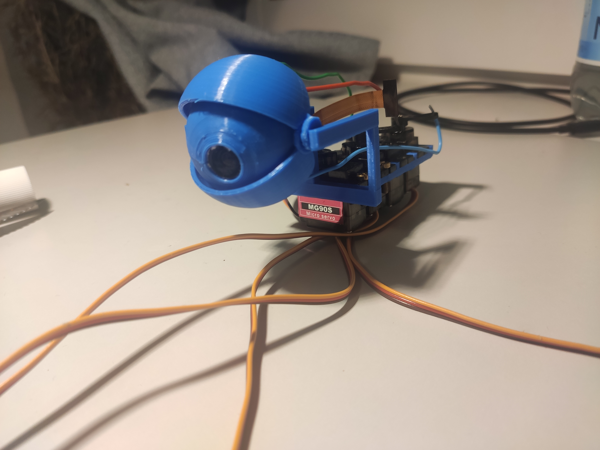

Te goal of this project is to design and build an animatronic eye which is mostly 3D-printable and
equip it with a camera. The images taken by the camera will than be analyzed in order to animate the eye interactively,
giving the impression that it is alive .
2. Mechanical Design
My main focus designing the animatronic eye was to make it almost completely 3D printable since I on had a 3D printer, motors and M3 screws.
I was also testing blender precision modeling capabilities.
Designing the eye with two controllable angles without mounting one motor on the eye was the tricky part.
I solved this by adding further moving parts between the servo motors and the eyeball as shown below.
Initially I was printing the eye in a single job with the parts already mounted together.
I quickly learned how easily 3D-printed parts brake and redesigned the eye in a way that individual parts that brake can be easily replaced.
I chose to mount a camera inside of the eyeball in order to increase the field of view and make interactive animations of the eye easier
(since computing the direction of detected objects relative to the eye in the camera images
is easier if the camera points in the same direction).
My most< current design is shown below.

2. Animating the Eye (WIP)
The eye will be able to detect and track objects using YOLOv8 running on a raspberry pi which also controls the servomotors.